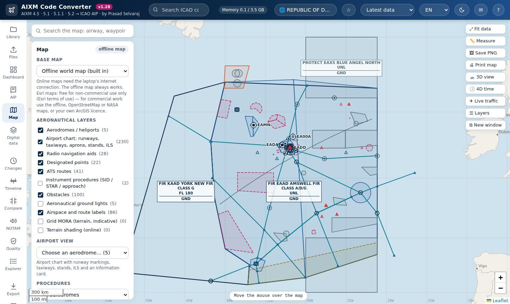
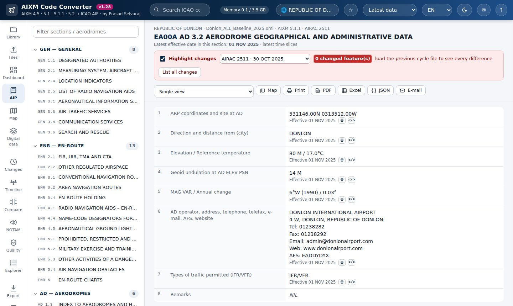

Open AIXM 4.5 and 5.x files in your browser and see GEN, ENR and AD the way an AIP presents them, with a map, AIRAC changes, quality checks and exports. Nothing to install, and your data stays on your computer.
Free and open source (Apache-2.0) · Chrome or Edge on Windows, macOS or Linux · Works offline

No account, no server and no installation.
For AIS / AIM specialists, data originators, procedure designers, airports and anyone who needs to read aeronautical data without reading XML.
GEN, ENR and AD laid out as in the ICAO specimen AIP. Every value links to the exact AIXM code behind it.
Airspace, routes, navaids, procedures and obstacles on a map, in 3D with terrain, and as aerodrome charts.
What changed, where and when: baselines, permanent and temporary changes, and a comparison of two cycles.
AIXM business rules, data completeness, CRC32Q integrity and Annex 14 obstacle limitation surfaces.
eTOD obstacles with their ICAO areas, aerodrome mapping (AMXM / AMDB), instrument flight procedures and terrain.
AIXM version conversion, GeoJSON, KML, Shapefile, GeoPackage, Excel and PDF.

Not for operational use. The AIXM Code Converter is for study, analysis and data review. It is not for navigation and not a certified aeronautical data product.